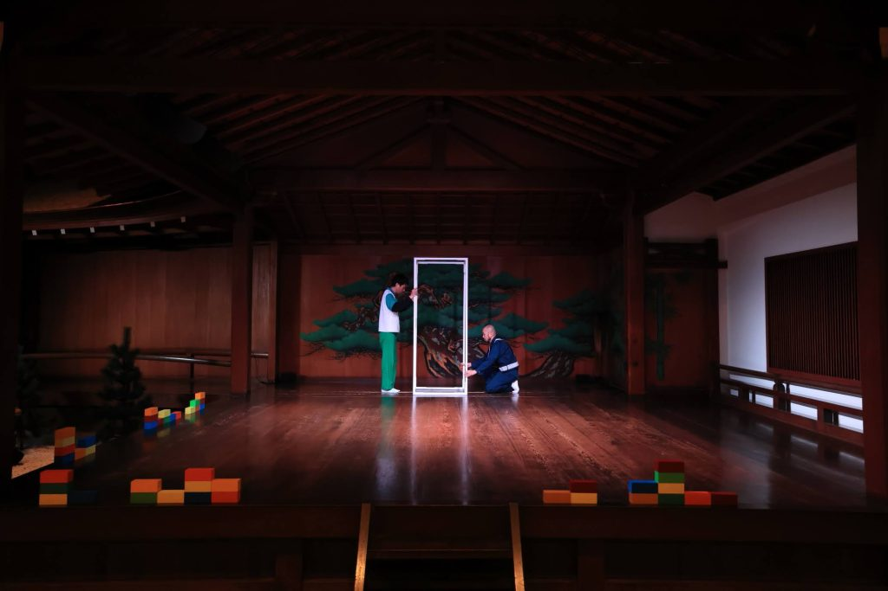
#0132023
コンテナ
約80分6人
夢洲の湿地とコンテナターミナルという対照的な風景を起点に、港湾都市・大阪を「規格化された箱」の視点から捉え直す作品。物流、万博、IRといった都市更新の現場に積層する物語を掘り起こす。
Script on note 当時の特設サイト各作品のあらすじ、note の台本、外部の公演サイトや保存資料へのリンクです。

#0132023
夢洲の湿地とコンテナターミナルという対照的な風景を起点に、港湾都市・大阪を「規格化された箱」の視点から捉え直す作品。物流、万博、IRといった都市更新の現場に積層する物語を掘り起こす。
Script on note 当時の特設サイト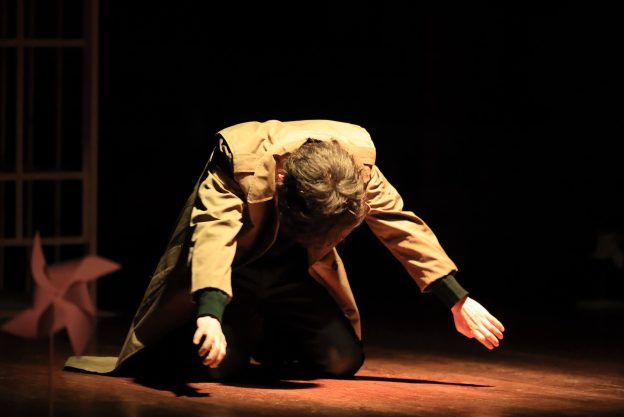
#0122022
大阪大空襲の記憶が残る場所を参照点に、戦争、避難、約束の継承を描く。現在の都市風景と遠隔地の戦禍を接続し、「難民」という言葉の輪郭を舞台の上で問い直す試み。
Script on note 当時の特設サイト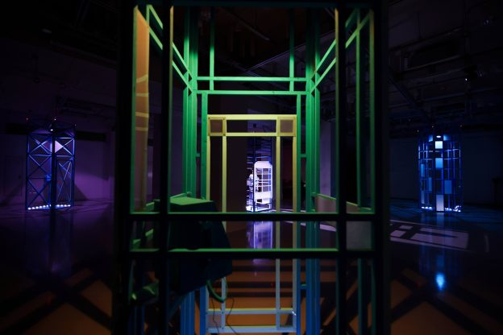
#0112021
タワーマンションと電話ボックスを軸に、会場の上下階に分かれた観客が異なる視点を体験する構造を採用。都市住民の距離感や分断を、上演形式そのものとして可視化した作品。
Script on note 公演サイト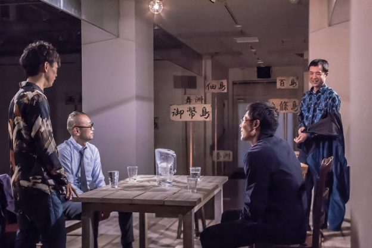
#0102019
江之子島を舞台に、観客が俳優に導かれて劇場内外を巡るツアーパフォーマンス。水没した架空都市「ソコハカ」の来歴を辿りながら、都市の記憶と未来像を身体的に体験する。
Script on note 公演サイト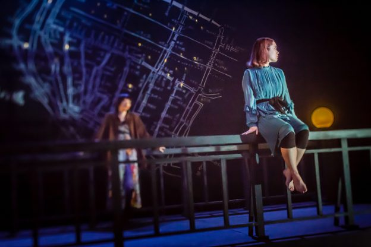
#0092018
東横堀川を題材に、橋を跨ぐ移動を通じて大阪の断片的な風景を採集する。かつて都市の境界線であった水路を辿りながら、現在の都市生活の身体感覚を更新していく。
Script on note 公演サイト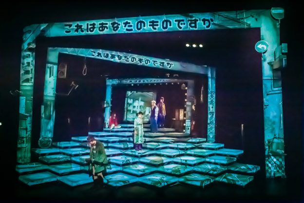
#0082017
コインロッカー内部で目覚めた人物たちの状況設定から、都市モジュールが連鎖的に変形していく構造を立ち上げる。閉じた空間を通して都市の匿名性と不安を描き出す。
Script on note 当時の特設サイト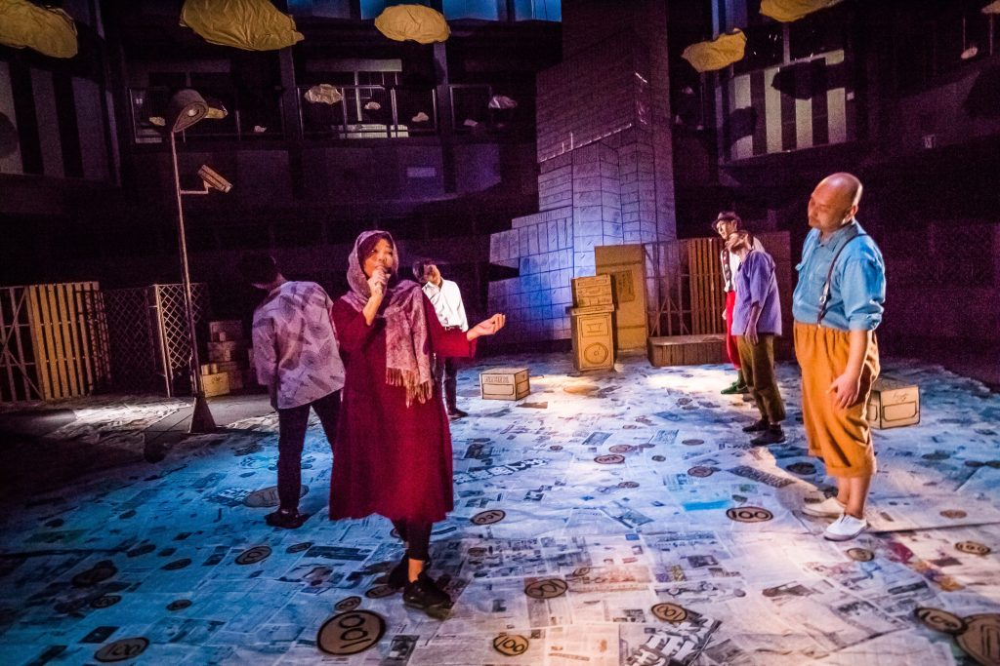
#0072016
かつての青空カラオケ文化が消えた天王寺公園を参照し、整備された空間に残る空白を描く。都市から押し出された人々の気配を追いながら、報告劇の形式で記憶を再構築する。
Script on note 当時の特設サイト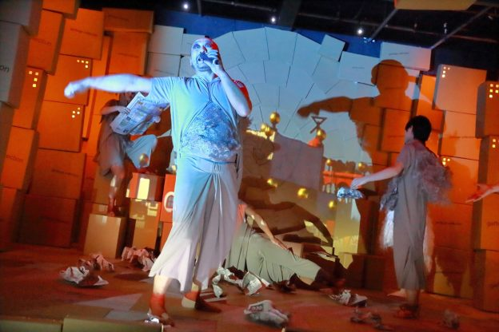
#0062014
開発が停滞した埋立地・舞洲を題材に、公的文書と市民インタビューをコラージュ。都市計画と言説のズレを俳優の身体と移動体験で可視化し、「この街とは何か」を問う。
Script on note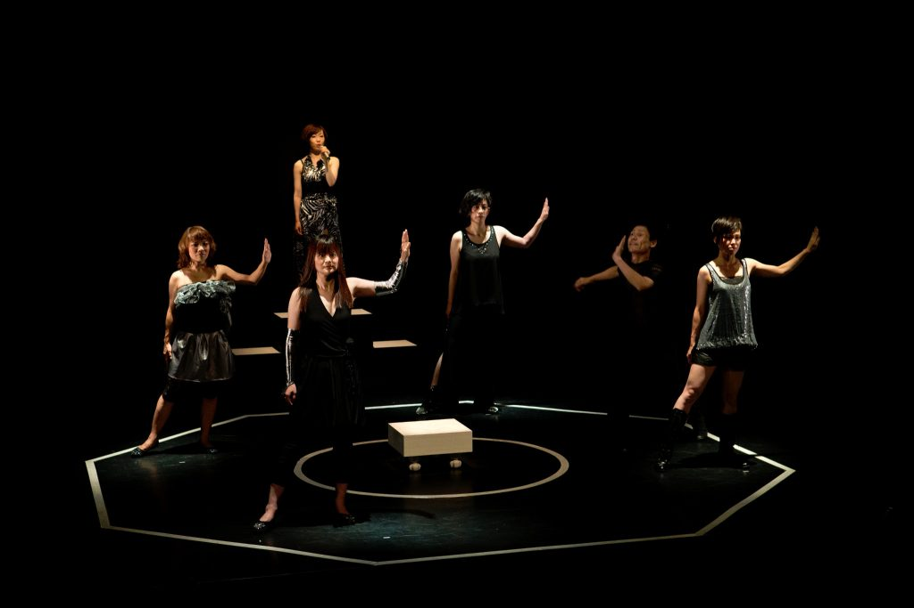
#0052013
コインパーキングという宙づりの都市空間をモチーフに、断片的な物語群を高速で接続する。軽い躁状態の都市と人間の哀しみを同時に浮かび上がらせる初期代表作。
Script on note 当時の特設サイト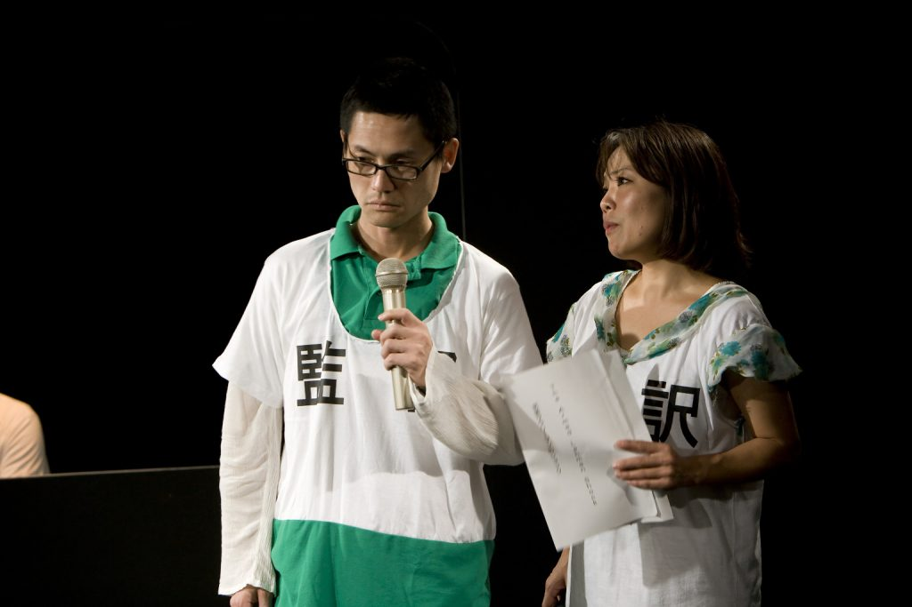
#0042010
地下鉄という都市インフラを軸に、都市生活者の移動と孤独、接続の感覚を描く。のちの再演・ツアー展開へ繋がる、極東退屈道場の転換点となる作品。
Script on note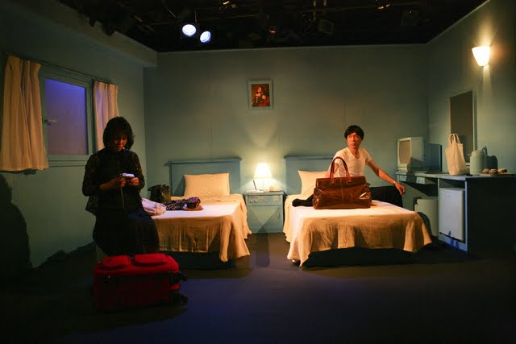
#0032009
都市風景に重なる記憶の層を追い、現実と虚構の境界を横断する初期作品。後年の都市リサーチ型作品群へと連なる視点がすでに提示されている。
Script on note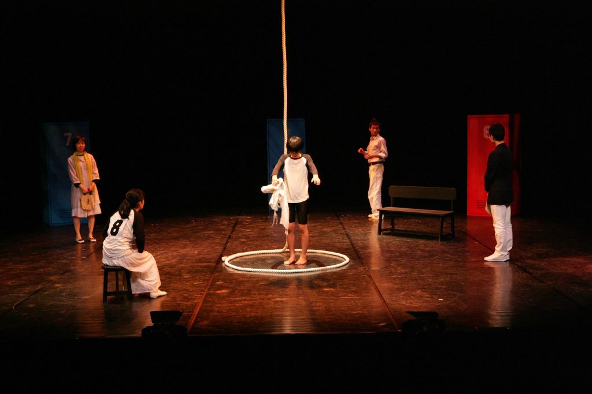
#0022008
都市の周縁に立つ人物たちの声を重ね、関係の輪郭を更新していく第2作。のちの報告劇的手法の萌芽が見える、重要な初期作。
Script on note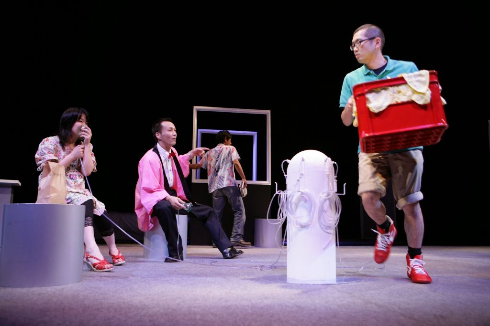
#0012007
極東退屈道場の起点となる第1作。以後一貫して続く「都市観測を劇化する」方向性の原点として、現在の作品群を理解するうえでも重要な位置を占める。
Script on note極東退屈道場名義の上演とは別に、他団体・他企画へ書き下ろした作品です。


残りの外部作品一覧をひらく
Archive Note
一部作品にある「当時の特設サイト」は、公開時のかたちをそのまま残した記録です。現在の情報とは異なる場合があります。